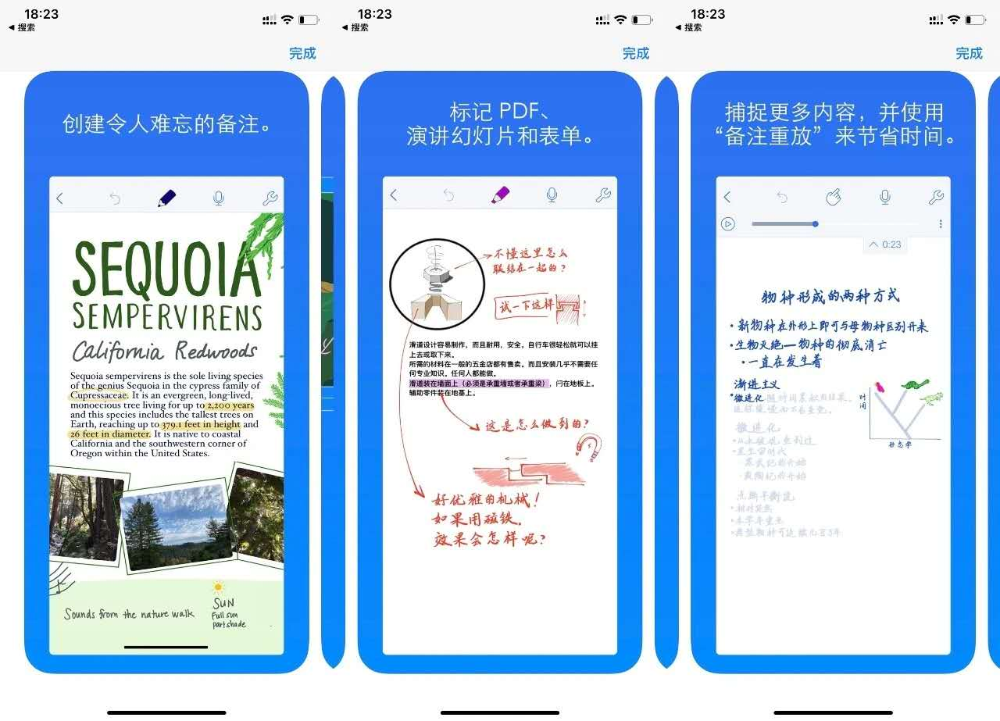
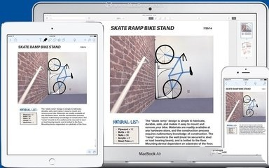

The Most Popular Note App in iPad
 Combine handwriting, photos and typing in a single note to bring your projects to life. Use a wide range of note-taking and sketching tools to capture every detail. You can even add and annotate PDFs in Notability. It's the perfect place to create and organize work, school, and life's information!

Experiment with different tools to create beautiful, hand-crafted notes and sketches. Continue to scale, rotate, and recolor your ideas and sketches until your notes are just how you want them. Once you're done, organize your notes with ease so you always know where to find what matters most.
Zoom in on the specifics, or explore the big picture by combining sketches, outlines, and type. Now you are ready to share your notes with colleagues or study partners through Google Drive, AirDrop, Email and Dropbox.
“We rely on this sleek powerful note-taker to annotate documents, record lectures, sketch illustrations, and more.”
——Apple ®